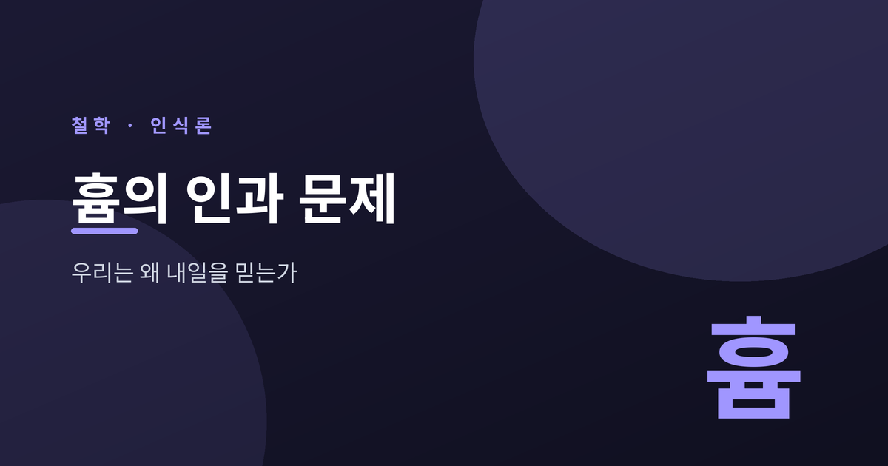
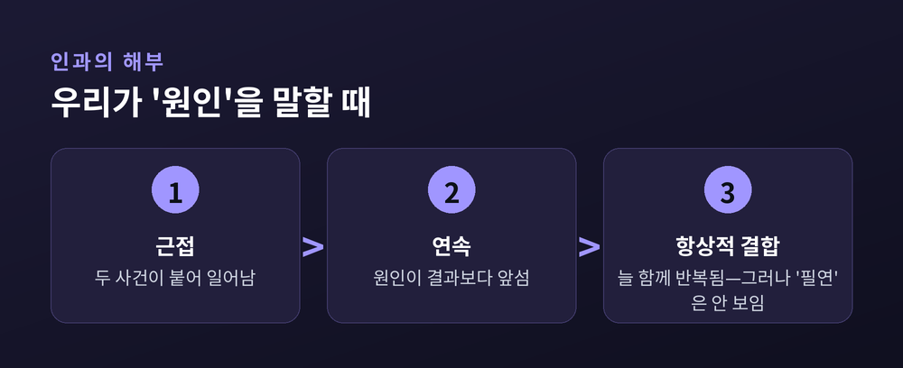
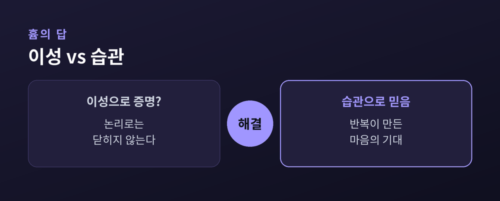

이번 글에서는 데이비드 흄이 던진 하나의 물음을 정리해 보겠습니다. 우리는 왜 내일도 해가 뜬다고 믿을까요. 당연해 보이는 이 믿음을 흄은 끝까지 밀어붙여, 인과와 회의주의의 문제로 데려갑니다.

흄의 출발점은 단순합니다. 우리 마음에 떠오르는 모든 것을 그는 둘로 나눕니다.
하나는 인상입니다. 지금 이 순간 직접 겪는 지각입니다. 손에 닿는 뜨거움, 눈앞의 붉은색처럼 생생하고 힘이 셉니다.
다른 하나는 관념입니다. 인상이 지나간 뒤 마음에 남는 흐릿한 사본입니다. 어제 본 노을을 떠올릴 때의 그 희미한 그림이 관념입니다.
여기서 흄은 하나의 원리를 세웁니다. 모든 관념은 반드시 앞선 인상에서 나온다는 것입니다. 관념은 결국 인상의 복사본인 셈입니다.
그래서 어떤 개념이 정당한지 따질 때, 흄은 늘 같은 질문을 던집니다. "그 관념은 어떤 인상에서 왔는가." 이 질문이 곧 인과를 해체하는 칼이 됩니다.
우리는 원인과 결과를 자연스럽게 말합니다. 불이 손을 데게 한다. 공이 공을 움직인다. 여기에는 늘 '필연적 연결'이라는 느낌이 붙어 있습니다. 원인이 있으면 결과가 반드시 따라온다는 느낌입니다.
흄은 이 '필연'의 인상을 찾아 나섭니다. 그리고 아무리 뒤져도 그것을 세계 안에서 발견하지 못합니다.
당구공 하나가 다른 공을 치는 장면을 떠올려 보십시오. 우리가 실제로 보는 것은 무엇일까요. 두 사건이 붙어서 일어나고, 한쪽이 앞서고, 그 뒤에 다른 쪽이 움직인다는 사실뿐입니다.
흄은 인과를 세 요소로 해부합니다. 근접, 그리고 선행, 그리고 늘 함께 일어난다는 항상적 결합입니다. 이 셋은 눈으로 확인할 수 있습니다.
문제는 정작 핵심이라 여겼던 '필연적 연결'입니다. 그것에 해당하는 인상은 어디에도 없습니다. 원인 안에 결과를 강제하는 힘은 결코 지각되지 않습니다.
흄의 답은 뜻밖입니다. 필연이라는 관념은 세계가 아니라 우리 마음 안에서 생겨난다는 것입니다. 같은 결합을 수없이 겪으면, 마음은 원인을 보는 순간 결과로 미끄러져 갑니다. 그 내적인 이행의 느낌이 '필연'의 정체입니다. 필연은 세계의 성질이 아니라, 마음이 세계에 덧씌운 투사인 셈입니다.

여기서 더 깊은 물음이 열립니다. 이른바 귀납의 문제입니다. 흄은 『인간 지성에 관한 탐구』에서 이를 가장 또렷하게 펼칩니다.
우리는 관찰한 것에서 관찰하지 않은 것으로 늘 건너뜁니다. 지금껏 해가 떴다는 사실에서, 내일도 해가 뜬다는 결론으로 넘어갑니다. 이 넘어감을 무엇이 정당화할까요.
흄은 이 물음을 하나의 딜레마로 몰아넣습니다.
이 추론은 '자연은 한결같다'는 가정에 기댑니다. 미래가 과거를 닮으리라는 믿음입니다. 그런데 이 가정 자체는 어떻게 증명할까요.
논리로는 안 됩니다. 자연이 갑자기 달라지는 세계도 모순 없이 상상할 수 있기 때문입니다. 태양이 내일 뜨지 않는다는 말은 이상하게 들려도, 논리적 모순은 아닙니다.
경험으로도 안 됩니다. "지금까지 귀납이 잘 통했으니 앞으로도 통한다"는 말은, 증명하려는 것을 이미 전제로 깔고 있습니다. 제자리를 도는 순환입니다.
결국 관찰에서 미래로 건너뛰는 그 비약을, 정당화할 논리적 근거가 없다는 것입니다. 이것이 흄이 남긴 서늘한 결론입니다.
여기서 흄은 회의주의자로만 남지 않습니다. 그는 방향을 틉니다.
질문을 바꾸는 것입니다. "이 믿음은 왜 정당한가"라는 물음에 답할 수 없다면, "인간은 왜 이 믿음을 갖고 마는가"라고 되묻습니다.
그 답이 관습, 또는 습관입니다. 같은 결합을 되풀이해 겪으면, 마음은 두 사건을 짝짓는 데 익숙해집니다. 원인을 보면 결과를 기대하게 됩니다. 이 기대는 추론의 산물이 아닙니다. 반복이 마음에 새긴 성향입니다.
그래서 흄에게 습관은 "인간 삶의 위대한 안내자"입니다. 우리가 내일을 믿는 것은 논리가 시켜서가 아닙니다. 본성이 그렇게 만들기 때문입니다.
흥미로운 점은 흄이 이를 결함으로 보지 않았다는 것입니다. 만약 우리가 완벽한 논증이 갖춰질 때까지 아무것도 믿지 않는다면, 삶은 한 걸음도 나아가지 못할 것입니다. 습관은 그 빈자리를 메워 우리를 살게 합니다. 논리의 결핍을 자연이 실용의 방식으로 채우는 셈입니다.
예전의 철학이 믿음의 근거를 이성에서 찾았다면, 흄은 그것을 자연스러운 심리의 작동에서 찾습니다. 정당화의 물음을, 설명의 물음으로 옮긴 셈입니다.

흄의 결론은 반쪽만 보면 오해하기 쉽습니다.
한편으로 그는 인과의 합리적 근거를 무너뜨립니다. 이 점에서 그는 급진적 회의주의자입니다.
그러나 다른 한편, 그는 "믿지 말라"고 말하지 않습니다. 오히려 믿음은 이성이 아니라 자연이 강제한다고 봅니다. 서재 안에서는 회의가 승리하지만, 서재를 나서는 순간 자연이 우리를 다시 믿게 만듭니다.
그래서 흄에게 회의주의와 자연주의는 서로를 떠받치는 한 몸입니다. 합리적 근거는 없지만, 그럼에도 믿는 것이 인간이라는 것. 이 균형이 흄 사상의 묘미입니다.
물론 흄을 어떻게 읽을지는 지금도 논쟁거리입니다. 순수한 회의주의자로 보는 시선과, 자연주의를 함께 품은 사상가로 보는 시선이 나란히 있습니다. 어느 쪽도 흄의 전부를 담지는 못합니다.
흄의 물음은 그를 읽은 이들을 잠 못 들게 했습니다.
칸트는 흄이 자신을 "독단의 잠에서 깨웠다"고 고백했습니다. 그는 인과를 경험에서 끌어내는 대신, 인간 지성이 세계를 이해하기 위해 미리 갖춘 틀로 보았습니다. 흄의 문제에 정면으로 맞선 답이었습니다.
20세기의 칼 포퍼는 다른 길을 냅니다. 그는 흄이 옳다고 인정합니다. 우리의 모든 보편 법칙은 영원히 추측으로 남는다는 것입니다.
대신 포퍼는 과학의 성격을 다시 정의합니다. 과학은 증거를 쌓아 이론을 증명하는 일이 아닙니다. 검증과 반증은 논리적으로 대칭이 아니기 때문입니다.
보편 법칙은 아무리 많은 사례로도 완전히 증명되지 않습니다. 그러나 단 하나의 반례로는 확실하게 무너집니다. 그래서 과학은 이론을 떠받치려 애쓰는 대신, 이론을 반박하려 시도합니다. 반증할 수 있는가, 이것이 과학과 비과학을 가르는 기준이 됩니다.
흄이 "귀납은 정당화되지 않는다"고 못 박은 자리에서, 포퍼는 과학을 "추측과 반박"으로 바꿔 그 문제를 우회한 셈입니다.
정리하면 이렇습니다. 흄은 우리가 가장 당연하게 여기던 인과의 끈을, 세계가 아니라 마음이 묶은 것이라고 보여주었습니다. 내일 해가 뜬다는 믿음도 논리의 결론이 아니라 습관의 산물입니다.
그렇다고 그가 우리에게 믿음을 버리라 하지는 않았습니다. 오히려 근거 없이도 믿고 마는 것이 인간이라는 사실을, 담담히 받아들이라 권합니다.
“이성이 침묵한 자리를, 습관이 대신 걸어간다.”
우리가 왜 내일을 믿느냐고 흄에게 다시 묻는다면, 그는 이렇게 답할 것입니다. 증명해서가 아니라, 그렇게 살도록 태어났기 때문이라고.